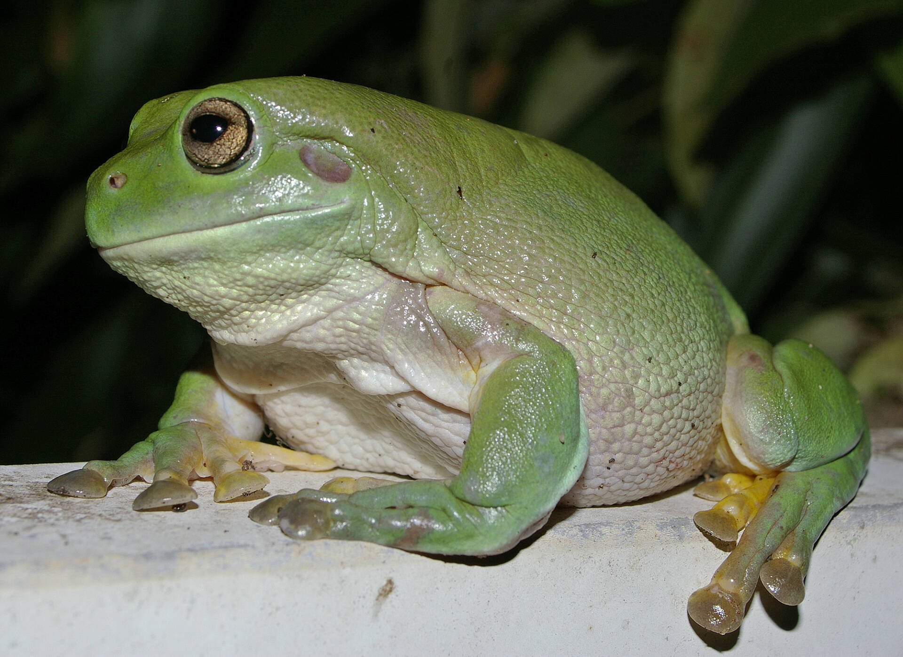
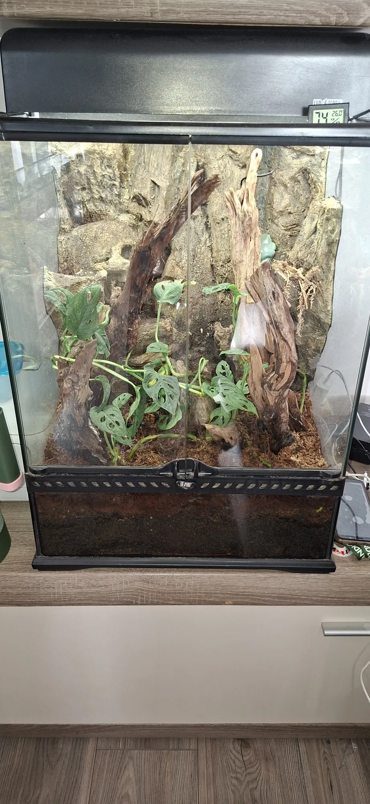
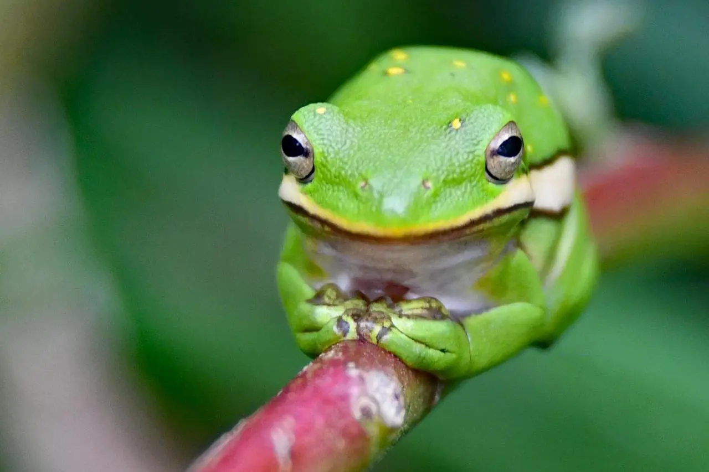

Pochodzenie
Australia i Nowa Gwinea
Długość
8–12 cm
Długość życia
10–20 lat
Tryb życia
Nocny, nadrzewny
Cechy szczególne
Doskonale wspina się po pionowych powierzchniach
Poradnik hodowli i szczegółowe informacje o gatunku

Australia i Nowa Gwinea
8–12 cm
10–20 lat
Nocny, nadrzewny
Doskonale wspina się po pionowych powierzchniach

Dzień: 24–28°C
Noc: 20–24°C
50–70%, regularne zraszanie
Cykl dzień/noc, opcjonalnie UVB
Włókno kokosowe, mech lub bioaktywne

Rzekotki są spokojne, ciekawskie i często aktywne po zmroku.
Nie należy dotykać często – ich skóra jest bardzo delikatna.